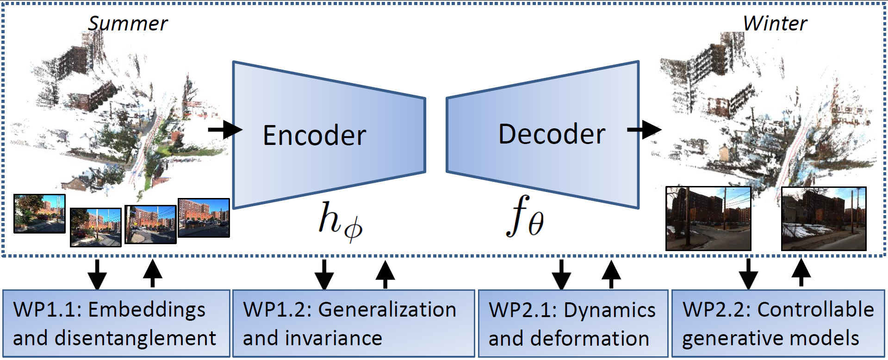

KTH Royal Institute of Technology, Stockholm
Contact •
Kathlén Kohn kathlen@kth.se
The research group on Applied Algebraic Geometry in Data Science and AI led by Kathlén Kohn
at the Department of Mathematics at KTH Stockholm has an open postdoctoral position:
- Starting date: upon agreement, in 2024
- Duration: employment for 2 years
- Requirements: a doctoral degree or an equivalent foreign degree, obtained within the last three years prior to the application deadline (with exceptions for special reasons, e.g., sick or parental leave)
- How to apply: TBA
- Application deadline: February 6, 2024
The position comes with minor teaching duties.
The position is funded by
WASP (Wallenberg AI, Autonomous Systems and Software Program).
The successful candidate will work on the multidisciplinary project
3D Scene Perception, Embeddings and Neural Rendering
led by
Fredrik Kahl (computer vision and image analysis at Chalmers),
Kathlén Kohn (algebraic geometry at KTH),
and
Mårten Björkman (robotics, perception and learning at KTH).
Besides a doctoral degree as specified above, the successful candidate is expected to have:
- a strong background in algebraic, complex, differential, or discrete geometry, or related areas of mathematics,
- a strong interest and previous experience in machine learning or computer vision,
- written and spoken English proficiency, very good communication and teamwork skills, in particular a willingness to collaborate with engineers and industry, and
- strong motivation and ability to work independently.

This multidisciplinary project is a WASP NEST (Novelty, Excellence, Synergy, Teams)
with a total duration of 5 years, starting from April 2022.
The Team: The project is led by the three principal investigators listed above.
In addition, the NEST currently consists of two PhD students and two postdocs (in each category, one at Chalmers and one at KTH).
To facilitate transfer of results and experience from the project for further exploitation in industry, we have industrial partners:
H&M,
Volvo Cars,
Zenseact, and
Embellence Group.
The NEST organizes regular joint seminars and workshops. Moreover, regular visits among the involved sites are possible and encouraged.